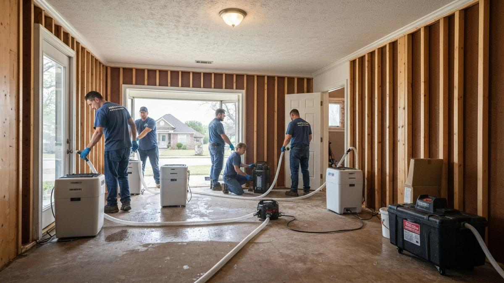

Coweta is the largest city in Wagoner County with a population approaching 10,000, positioned about 20 miles southeast of Tulsa on the Verdigris River corridor. The city has grown substantially in the past decade as Tulsa-area families seek larger lots and lower land costs on the metro's southeastern fringe. The Verdigris River and its tributaries create real flood risk for Coweta properties, particularly those in lower-lying areas near the river. Wagoner County's storm history includes significant tornado and severe weather events that can produce rapid structural water intrusion. Tulsa Water Damage Pros covers Coweta and all of Wagoner County with 24/7 emergency response.

Our Water Damage Services in Coweta
- Emergency Water Extraction — 24/7 rapid response to Coweta homes and businesses.
- Structural Drying — Industrial dehumidifiers and air movers restore moisture levels to normal.
- Mold Prevention — Antimicrobial treatment applied to all affected surfaces within the critical 24–48 hour window.
- Content Pack-Out — Furniture and belongings moved to prevent additional damage.
- Insurance Documentation — Detailed reports and photos to support your Coweta insurance claim.

Frequently Asked Questions — Water Damage in Coweta
Do you serve rural properties outside of Coweta city limits?
Yes. We serve rural Wagoner County addresses including farms and acreage properties outside Coweta city limits. Rural properties often face greater challenges from storm water intrusion and we have the equipment for remote locations.
How does Coweta's location near the Verdigris River affect flood risk?
Properties in flood zones near the Verdigris River in Coweta are at elevated risk during significant rain events. We recommend all Coweta homeowners near the river check their FEMA flood zone designation. We respond to flood events regardless of cause and document damage for both standard homeowners and NFIP flood claims.
What is the most important thing to do immediately after water damage in Coweta?
Call immediately and stop the water source if possible. Turn off the main water supply for pipe bursts. Do not run HVAC through flooded areas — this spreads moisture. Document with photos before moving anything. Then call us — early intervention is the single biggest factor in limiting total damage.
Water Damage in Coweta? Call Now.
Every hour matters. 24/7 dispatch · Licensed & insured · Serving all of Wagoner County
📞 (918) 723-2096Other Areas We Serve
- Water Damage Restoration in Broken Arrow
- Water Damage Restoration in Bixby
- Water Damage Restoration in Sapulpa
- Water Damage Restoration in Owasso
- Water Damage Restoration in Sand Springs
- Water Damage Restoration in Jenks
- Water Damage Restoration in Glenpool
- Water Damage Restoration in Claremore
- ← Back to Tulsa Home